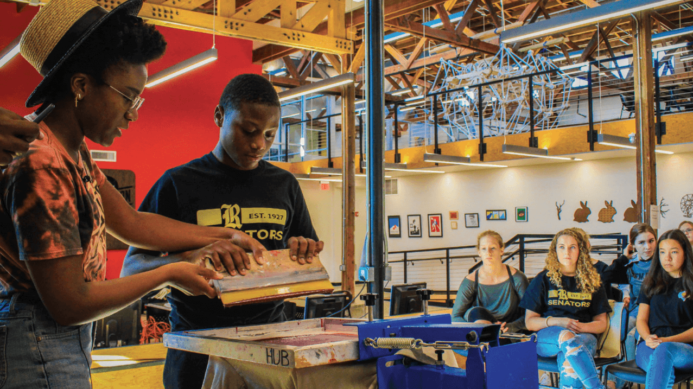
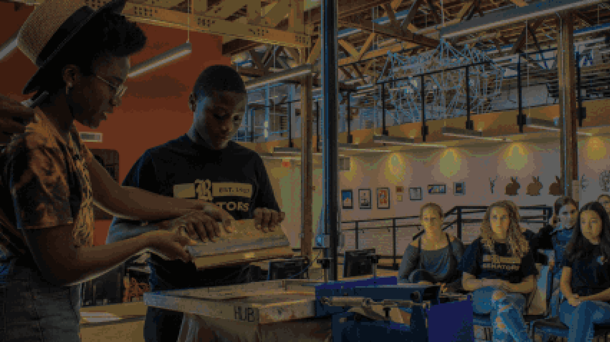

Official Style Guide
Our Brand
The identity and integrity of the Arkansas Regional Innovation Hub is integral to our ability to attract, develop, and retain the many talented and creative individuals who make up our community.
To that end, we provide this detailed style guide so that all official Hub materials reflect the professional, welcoming, and industrious space that we work so hard to create.
The guidelines presented apply to all represenations of our brand in all of the following media:
- Advertising Materials
- Website Design and Social Media Promotion
- Graphic Design
- Official Photography
- Screen Printing
- Other Print Media
Table of Contents
Each section will cover a different aspect of our house style.
You can jump to any section using the shortcuts below.
Voice & Tone
Public Materials
Official Innovation Hub materials should always maintian a professional tone and voice.
Always use inclusive and inviting language, and consider the specific audience of the materials in question.
Promotional materials should express the excitment and love of learning which drives our company mission.
Internal Documents
Internal documents should be professional and concise.
Only use visual elements and colors insofar as they are directly relevant to the material in question.
Always write with respect for your co-workers and with regard for your ethical duties to others.
Abbreviations
When referring to the Arkansas Regional Innovation Hub, you may abbreviate the company name to "The Innovation Hub" (as seen in our logo), or more informally as simply "The Hub".
STEAM is an abbreviation which stands for Science, Technology, Engineering, Art, and Math.
It is an extension of the acronym STEM which some people may be more familiar with.
Terminology
Here at the Innovation Hub, we use some terms which not everyone may be familiar with. However, they are an important part of our vocabulary.
These terms should be well understood when writing official materials for the Hub so that we maintain a consistent professional voice.
Makers & Maker Spaces
A Maker is any person who is engaged in any of the wide variety of creative arts represented at the Hub. Some of these disciplines include:
- Ceramics
- Screen Printing
- Carpentry and Woodworking
- Metalworking
- Printmaking
- Electronics Prototyping
Similarly, “Maker Spaces” serves as a generic term to encompass all of the various spaces in which makers operate.
Additionally, it should be understood that these are cooperative, shared spaces in which mutual learning and growth are prioritized.
When speaking about the various spaces at the Hub generally, it is appropriate to use the terms “makers” and “maker spaces”,
however when speaking about a more specific space, one should refer to that space by its intended function.
STEAM
STEAM is an acronym for Science, Technology, Engineering, Art, and Math.
These subjects encompass the primary focal points of our many classes and workshops.
This term is often used in connection with our educational programs and student outreach programs.
Use this term when refering to the educational goals and benefits of Innovation Hub programs and classes.
Typography
For a general-purpose font, use Lato or Open Sans.
These are also appropriate for smaller subsection headings and labels.
These are also suitable for both print and online materials, so if you ever unsure what font to use, these are a safe bet.
Lato
ABCDEFGHIJKLMNOPQRSTUVWXYZ
abcdefghijklmnopqrstuvwxyz
For larger headings and text which is being placed over a background image, use Oswald.
In such cases, Oswald provides a bolder, clearer look against complex backgrounds.
These headings should always be in all-caps (no lowercase letters).
Oswald
ABCDEFGHIJKLMNOPQRSTUVWXYZ
abcdefghijklmnopqrstuvwxyz
When placing text over images, use a white text color with a faded background shadow effect.
This will provide a subtle outline to the text which will make it easy to read against any background image.
Color
Our Colors
Our company colors are simple and timeless.
Our primary theme colors are blue, and red is used as an accent color to draw the reader's attention to important elements.
Color Usage
Color usage should roughly match these percentages. White should be used as the main background color.
Text should be black so that it is easily visible against the white background.
When a secondary background color is needed, use dark blue.
Red may be used for larger headings, and dark blue may be used for smaller headings.
Light blue is appropriate for hyperlinks on the Hub website.
Text placed over blue and red backgrounds should be white, as it will provide a better contrast than black text.
Logo
The Hub logo is the most recognizable and iconic part of our brand, so its use should be treated with importance.
There are three versions of the logo which may be used in official Hub materials.
For Print and Online Materials
This is the primary version of our logo, and it should be your go-to choice when representing the Hub in print and online.
Our Logo, Simplified
This simplified version of the logo should be used for more low-profile branding.
On Location
A more detailed version of the logo is used for larger displays, such as those located on-location at the hub.
Any of the forms of the logo may be used in a monochrome solid white or black variant in a situation where using the regular color scheme would clash with other visual elements.
For example, if the logo is placed on top of an image with its own color scheme, one may opt to use a solid white logo so as not to disrupt the overall look.
Photos
General Usage


Images used in professional materials should always convey a welcoming and professional tone.
Do not use images which are too dark, grainy, or otherwise difficult to see.
Always use images directly relevant to the suibject material. If no such resources are available, please contact the digital media and photography team to procure a suitable image.
Promoting Classes and Workshops
Images used to promote classes and workshops should follow the same format as the images above.
When placing text over images, use a white text color with a faded background shadow effect.
This will provide a subtle outline to the text which will make it easy to read against any background image.
These images should be watermarked using a solid-white version of the Hub logo in the bottom-right corner.
Until Next Time...
We hope that this guide has been helpful in guiding your design decisions for official Innovation Hub media.
Please use this style guide as a reference sheet to refer back to whenever you have any doubts about your media's adherence to company policy.
If you have any further questions, please do not hesitate to contact the Media Team at media@arhub.org.